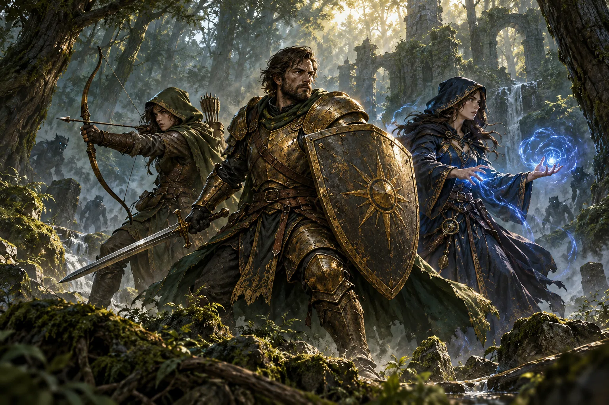

Choose your hero
Pick a race and class. Paladin, Warrior, or Hunter are forgiving ways to learn.
THE ADVENTURE BEGINS HERE
Pick your class. Hold your ground. Survive the world you thought you knew.
A free browser roguelike where your spells cast themselves and every minute brings a new threat.
No account needed · Opens on the creator's site · WebGPU browser required
THE GAME AT A GLANCE
Azeroth Survivors is a fan-made, browser-based survival roguelike created by Aethus. Choose a race, a class, and a zone, then keep moving as waves close in. Attacks happen automatically; your decisions are where to stand and which upgrades to take.
This independent guide helps you prepare for the first run. The game itself opens on the creator's website.
Read the complete beginner's guideCHOOSE YOUR PATH
Every class starts differently. Select one below to get a feel for its opening run.

YOUR FIRST CHOICE SHAPES THE RUNA forgiving melee start. Shields and self-healing leave room to learn boss timing.
SURVIVE THE CLOCK
Build your strength between timed boss arrivals. Elwynn Forest ends with a final fight at sixteen minutes.
See the zone progressionTHE WORLD AHEAD
Clear a zone's final boss to unlock the next for that class. Your journey starts in Elwynn Forest.
The Defias Uprising. Learn the rhythm of the run, then face Edwin VanCleef.
Defeat Morbent Fel to move on.
Lord Kazzak waits at the end.
Un'Goro Crater, Arathi Basin, Feralas, Gurubashi Arena, Scarlet Monastery, Alterac Valley, Blackrock Mountain, Gates of Ahn'Qiraj, and Naxxramas.
FIELD NOTES
Practical answers for your first run, tricky zones, browser errors, and lost saves.
Movement, upgrade picks, positioning, and a simple plan for your first boss.
Read the guide →02 / BUILDS & PROGRESSIONChoose a damage plan, cover its weakness, and make progress between runs.
Read the guide →03 / TROUBLESHOOTINGStart with the right browser and follow targeted steps for common failures.
Find a fix →YOUR FIRST RUN
Pick a race and class. Paladin, Warrior, or Hunter are forgiving ways to learn.
Elwynn Forest is open first. Move with WASD or the arrow keys.
Spells cast automatically. Choose one of three upgrades at each level.
Bosses arrive on schedule. Survive the finale to open the next zone.
BEFORE YOU PLAY
Quick answers to the things most new players need to know.
Yes. The creator offers it as a free fan project on the game's own website. No account is required.
The game needs WebGPU. A current Chrome, Edge, or supported Safari version is the best place to start. If WebGPU is unavailable, the creator also offers a Windows download.
No installation is needed for the browser version, but its world data must load on your first visit. You can also choose the Windows build on the creator's site.
Some mobile devices can run it with touch controls, but the game is best experienced on a desktop with a keyboard and a WebGPU-capable browser.
No. This is an independent fan guide. The game was created and is hosted by Aethus; our Play button takes you to the creator's site.
READY TO BEGIN?
Choose a class, enter Elwynn Forest, and see how long you can last.